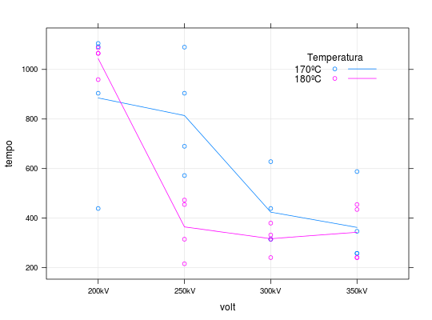
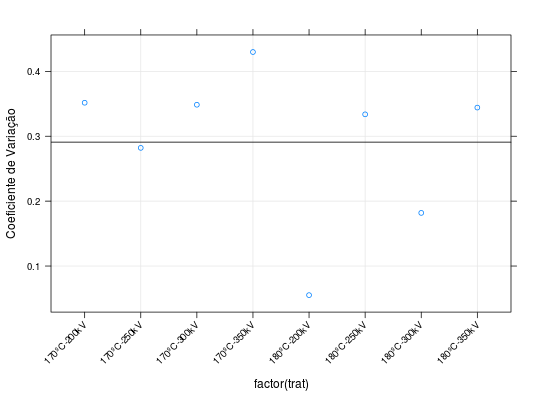

Resultados de um experimento em que a resistência de um determinado tipo de vidro foi avaliada segundo quatro níveis de voltagem e duas temperaturas. Foram 32 avaliações referentes a 4 repetições de cada tratamento (combinação dos níveis de voltagem e temperatura.)
Um data.frame com 32 observações e 3 variáveis.
tempovolttempPAULA (2004), Exercício 2.10.7, pág. 175.
Lawless, J. F. (1982). Statistical Models and Methods for Lifetime Data. John Wiley, New York.
data(PaulaEx2.10.7)#> Warning: data set ‘PaulaEx2.10.7’ not foundstr(PaulaEx2.10.7)#> 'data.frame': 32 obs. of 3 variables: #> $ tempo: int 439 572 315 258 904 690 315 258 1092 904 ... #> $ volt : Factor w/ 4 levels "200kV","250kV",..: 1 2 3 4 1 2 3 4 1 2 ... #> $ temp : Factor w/ 2 levels "170ºC","180ºC": 1 1 1 1 1 1 1 1 1 1 ...xtabs(~volt + temp, data = PaulaEx2.10.7)#> temp #> volt 170ºC 180ºC #> 200kV 4 4 #> 250kV 4 4 #> 300kV 4 4 #> 350kV 4 4library(lattice) xyplot(tempo ~ volt, groups = temp, data = PaulaEx2.10.7, type = c("p", "g", "a"), auto.key = list( corner = c(0.9, 0.9), lines = TRUE, cex.title = 1, title = "Temperatura" ))resumo <- aggregate(tempo ~ temp + volt, data = PaulaEx2.10.7, FUN = function(x) { c("Média" = mean(x), "D.Padrão" = sd(x), "C.Variação" = sd(x)/mean(x), "n" = length(x)) }) ftable(xtabs(tempo ~ temp + volt, data = resumo))#> Média D.Padrão C.Variação n #> temp volt #> 170ºC 200kV 8.850000e+02 3.111945e+02 3.516322e-01 4.000000e+00 #> 250kV 8.140000e+02 2.296490e+02 2.821241e-01 4.000000e+00 #> 300kV 4.242500e+02 1.478769e+02 3.485608e-01 4.000000e+00 #> 350kV 3.627500e+02 1.559174e+02 4.298207e-01 4.000000e+00 #> 180ºC 200kV 1.044000e+03 5.760787e+01 5.517995e-02 4.000000e+00 #> 250kV 3.647500e+02 1.217439e+02 3.337736e-01 4.000000e+00 #> 300kV 3.170000e+02 5.765992e+01 1.818925e-01 4.000000e+00 #> 350kV 3.430000e+02 1.180621e+02 3.442045e-01 4.000000e+00trat <- with(resumo, paste(temp, volt, sep = "-")) xyplot(tempo[, "C.Variação"] ~ factor(trat), data = resumo, ylab = "Coeficiente de Variação", grid = TRUE, scales = list(x = list(rot = 45)), panel = function(x, y, ...) { panel.xyplot(x, y, ...) panel.abline(h = mean(y)) })